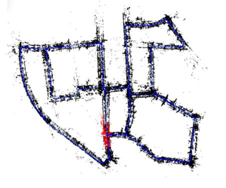

I am currently a fourth-year PhD student in the ECE Department at National Univeristy of Singapore, advised by Prof. Loong Fah Cheong and Prof. Gim Hee Lee. Before, I obtained my Bachelor's degree in the EEIS Department at University of Science and Technology of China (USTC) in 2015. From June to November 2018, I interned at Media Analytics Department of NEC Laboratories America, working with Prof. Manmohan Chandraker, Dr. Quoc-Huy Tran and Dr. Pan Ji. In 2014, I also worked as a summer intern with Prof. Yizhou Yu at The University of Hong Kong.
[CV] Email: zhuang.bingbing [at] u [dot] nus [dot] edu3D Computer Vision in general, with emphasis on Structure from Motion and its applications to robotics and non-geometric vision.
|
Learning Structure-and-Motion-Aware Rolling Shutter Correction [Oral Presentation]
Bingbing Zhuang, Quoc-Huy Tran, Pan Ji, Loong Fah Cheong, Manmohan Chandraker. IEEE Conference on Computer Vision and Patten Recognition (CVPR), 2019 [PDF Coming] |
|
|  |
Degeneracy in Self-Calibration Revisited and a Deep Learning Solution for Uncalibrated SLAM
Bingbing Zhuang, Quoc-Huy Tran, Pan Ji, Gim Hee Lee, Loong Fah Cheong, Manmohan Chandraker. IEEE/RSJ International Conference on Intelligent Robots and Systems (IROS), 2019 (Under Review) [PDF Coming][YouTube Video] |
|
Baseline Desensitizing In Translation Averaging
Bingbing Zhuang, Loong Fah Cheong, Gim Hee Lee IEEE Conference on Computer Vision and Patten Recognition (CVPR), 2018 [PDF][Supplementary][Code] |
|
|
Rolling-Shutter-Aware Differential SfM and Image Rectification
Bingbing Zhuang, Loong Fah Cheong, Gim Hee Lee IEEE International Conference on Computer Vision (ICCV), 2017 [PDF][Supplementary][Dataset] See C++ Code reimplemented by Felix Graule et al. as a 3D Vision Course Project in ETH Zurich |
Reviewer:
Computer Vision and Pattern Recognition (CVPR), International Conference on Computer Vision (ICCV), The Indian Conference on Computer Vision, Graphics and Image Processing (ICVGIP)